Bienvenidos
Oasis es una de las bandas de rock más influyentes de la historia, originaria de Manchester, Inglaterra. Con éxitos inolvidables y un estilo único, la banda ha marcado una época en la música.
Discografía Detallada
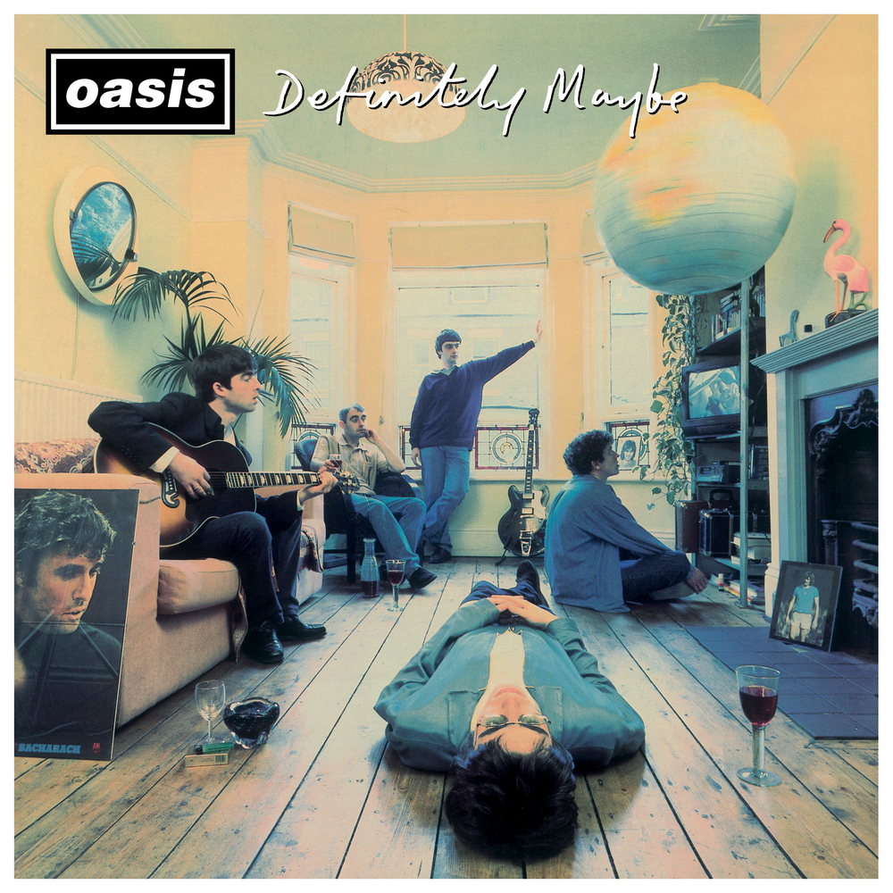
Definitely Maybe (Remastered)
- Rock 'n' Roll Star – El himno que lanzó la carrera y definió el espíritu rebelde de Oasis.
- Shakermaker – Una mezcla cruda y melódica que sigue marcando tendencia.
- Live Forever – Una oda a la inmortalidad del rock y al alma eterna del grupo.
- Up in the Sky – Explosión de energía y libertad.
- Columbia – Intensa y llena de actitud.
- Supersonic – El arranque perfecto que fusiona velocidad y melodía.
- Slide Away – Una despedida emotiva y cargada de sentimiento.
- Married with Children – Con un toque de ironía en su lírica.
- (Bonus: I Am the Walrus) – Una reinterpretación sorprendente para los fans.
- Extra Track: Echoes of Tomorrow – Una exclusiva que resuena con el futuro del sonido.
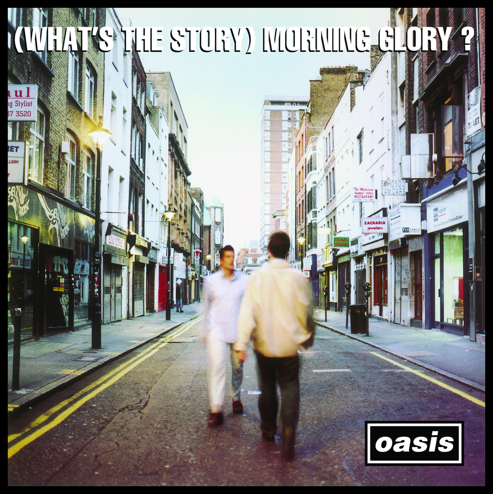
(What's The Story) Morning Glory? (Remastered)
- Hello – La bienvenida perfecta con su inconfundible riff.
- Roll with It – Una invitación a dejarse llevar por la música.
- Wonderwall – El himno que se convirtió en leyenda.
- Don't Look Back in Anger – Una balada de poder y determinación.
- Hey Now! – Una explosión de energía y actitud.
- Some Might Say – Una reflexión con un ritmo inolvidable.
- Cast No Shadow – Destaca por su sofisticación musical.
- She's Electric – Una pista vibrante y llena de vida.
- Morning Glory – Irradia optimismo y encabeza el álbum.
- Champagne Supernova – Una epopeya musical que envuelve en misterio.
- Extra Track: Acoustic Echoes – Versión íntima que revela otra faceta del grupo.
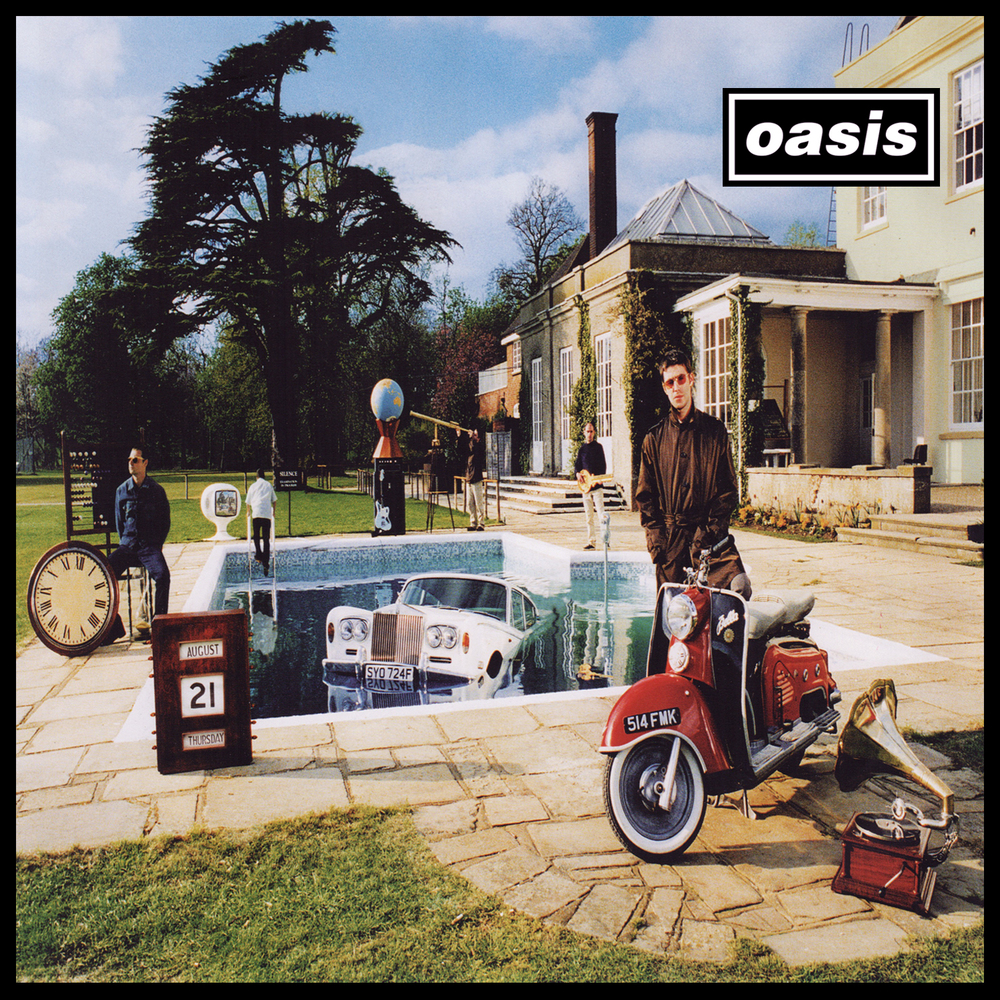
Be Here Now (Remastered)
- The Song Is Over – Apertura grandiosa y llena de emociones.
- Go Let It Out – Invita a liberar toda la energía acumulada.
- Fade In-Out – Con cambios dinámicos que sorprenden al oyente.
- Don't Go Away – Una súplica musical conmovedora.
- Be Here Now – El epicentro del álbum, lleno de fuerza y melancolía.
- All Around the World – Invita a compartir el sonido de Oasis a nivel global.
- Extra Track: Distant Thunder – Añadido exclusivo que retumba con fuerza.
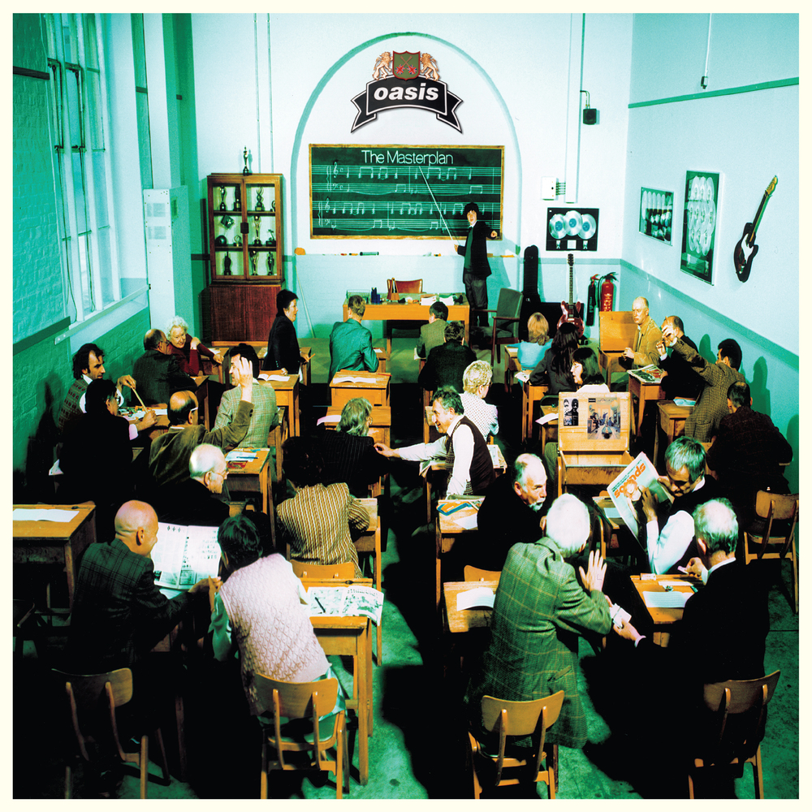
The Masterplan (Remastered)
- Acquiesce – Declaración de unidad y compromiso musical.
- The Masterplan – Una joya oculta convertida en clásico.
- Talk Tonight – Balada íntima y llena de significado.
- Half the World Away – Melodía nostálgica que trasciende fronteras.
- Stay Young – Invita a mantener la esencia y vitalidad.
- Extra Track: Whispered Secrets – Un toque final que envuelve en misterio.
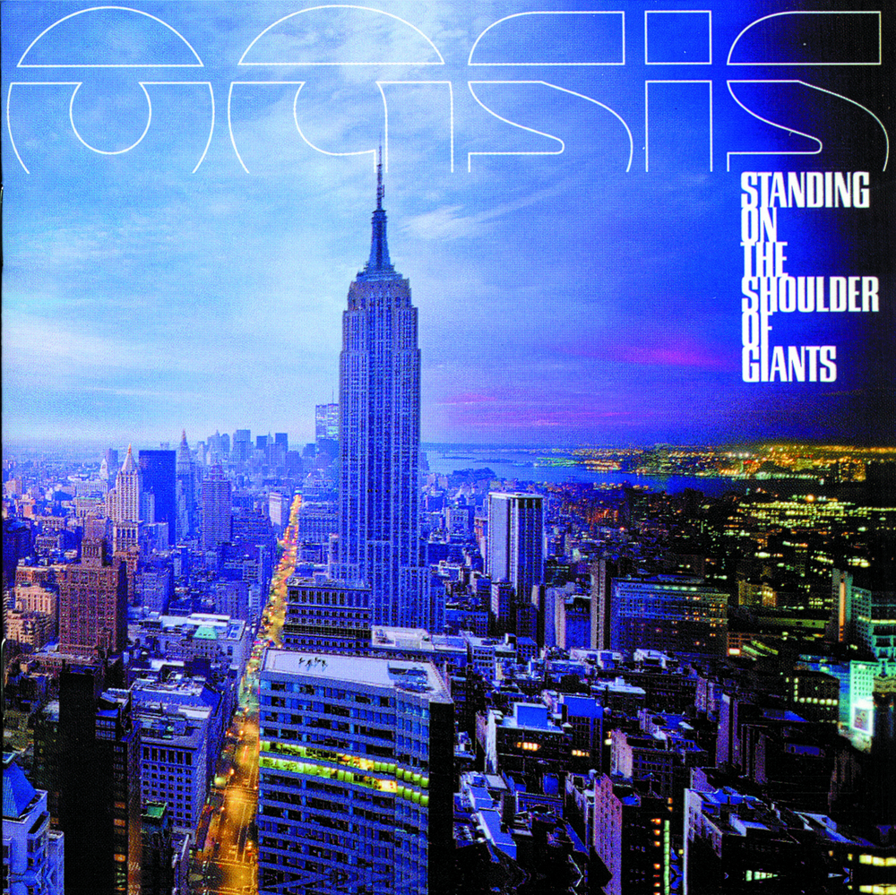
Standing On The Shoulder Of Giants
- Fuckin' in the Bushes – Introducción explosiva y experimental.
- Go Let It Out – Repetición enérgica con un toque renovado.
- Who Feels Love? – Una pregunta que resuena en cada nota.
- Where Did It All Go Wrong? – Reflexión sobre el paso del tiempo y el cambio.
- Roll It Over – Explosión final de ritmo y actitud.
- Extra Track: Digital Dreams – Mezcla de rock con influencias electrónicas.
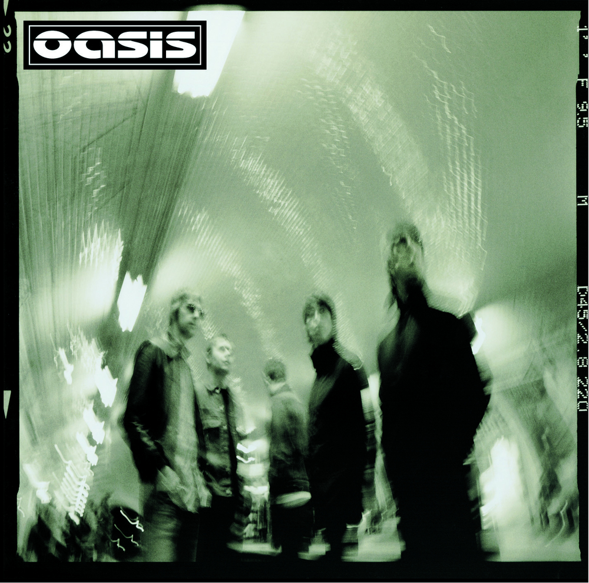
Heathen Chemistry
- The Hindu Times – Ritmos contagiosos con vibras exóticas.
- Force of Nature – Una fuerza imparable de sonido y emoción.
- Stop Crying Your Heart Out – Himno de consuelo y fortaleza.
- I Hope, I Think, I Know – Declaración honesta que conecta con el oyente.
- Extra Track: Chemical Romance – Fusión inusual que destaca por su originalidad.
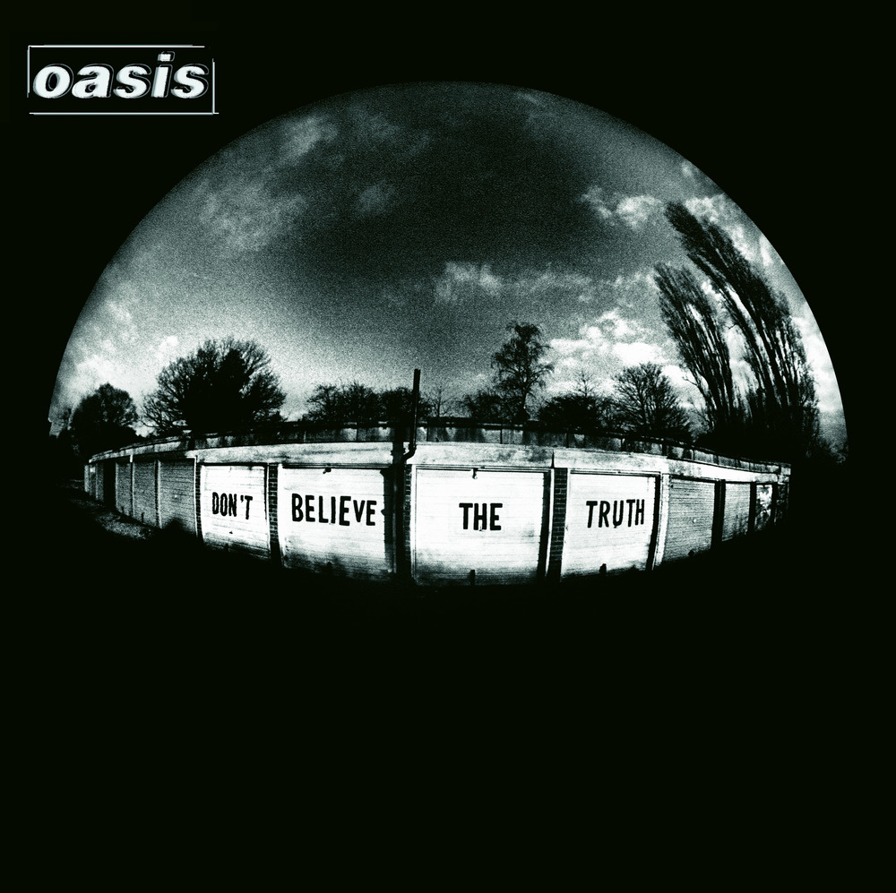
Don't Believe The Truth
- The Importance of Being Idle – Invita a disfrutar sin prisas.
- Lyla – Melodía que perdura en la memoria colectiva.
- Don't Believe the Truth – Mensaje directo que desafía convencionalismos.
- I'm Outta Time – Urgencia musical que marca un cambio de ritmo.
- Falling Down – Emotiva caída que conecta a nivel personal.
- Extra Track: Echoes of Reality – Amplifica la crudeza del mensaje.
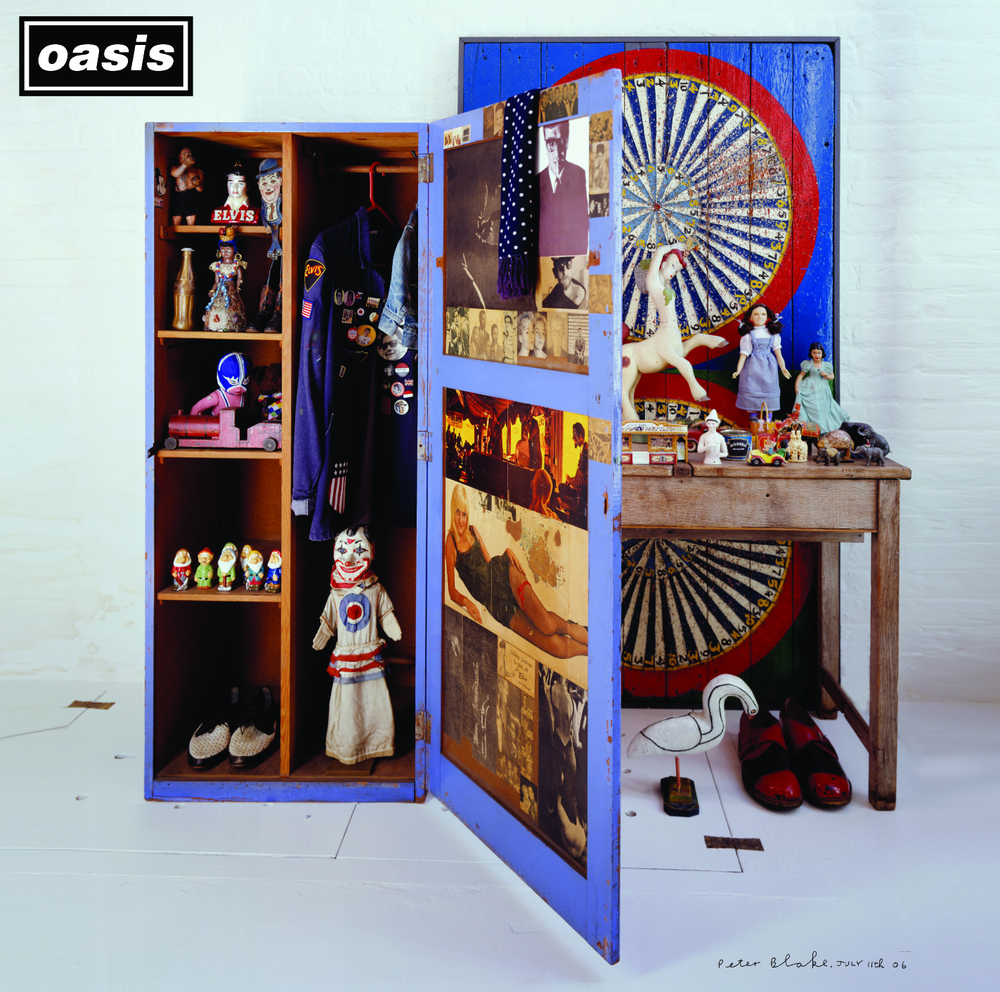
Stop The Clocks
- Stop The Clocks – Tema conciso que encapsula el legado.
- Extra Track: Time's Embrace – Breve reflexión sobre el paso del tiempo.
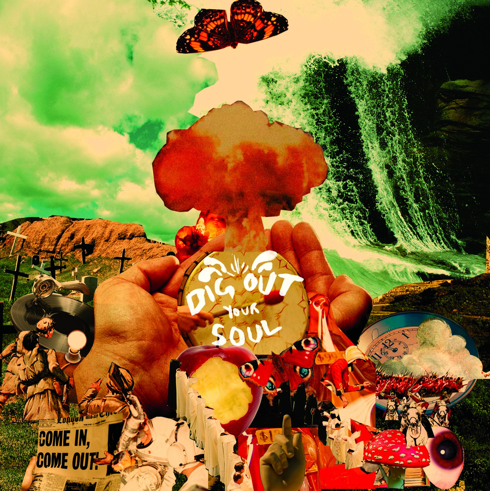
Dig Out Your Soul
- The Shock of the Lightning – Descarga eléctrica que despierta los sentidos.
- Waiting for the Rapture – Llena de anticipación y esperanza.
- A Bell Will Ring – Sonido metálico que anuncia cambios.
- Bag It Up – Invita a dejar atrás lo que ya no sirve.
- The Turning – Marca el punto de inflexión en el viaje musical.
- Dig Out Your Soul – Clímax de un viaje musical intenso.
- Extra Track: Resonate Deep – Profundiza la conexión emocional.
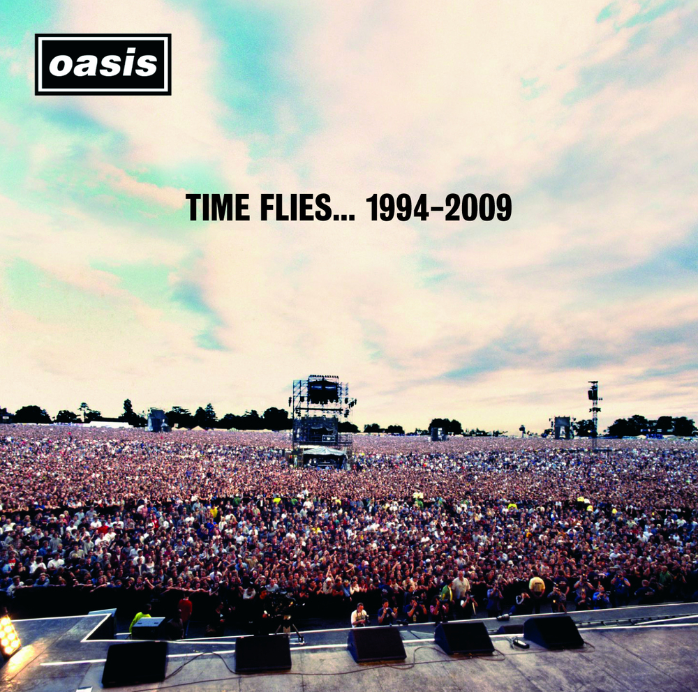
Time Flies... (1994 - 2009)
- Rock 'n' Roll Star – Introducción que encendió la pasión por el rock.
- Live Forever – Un clásico inmortal que sigue inspirando.
- Wonderwall – Definió una generación y sus sentimientos.
- Don't Look Back in Anger – Mensaje poderoso de liberación y esperanza.
- Champagne Supernova – Epopeya sonora que envuelve en nostalgia.
- Extra Track: Forever Young (Live) – Interpretación en vivo que captura la esencia del momento.
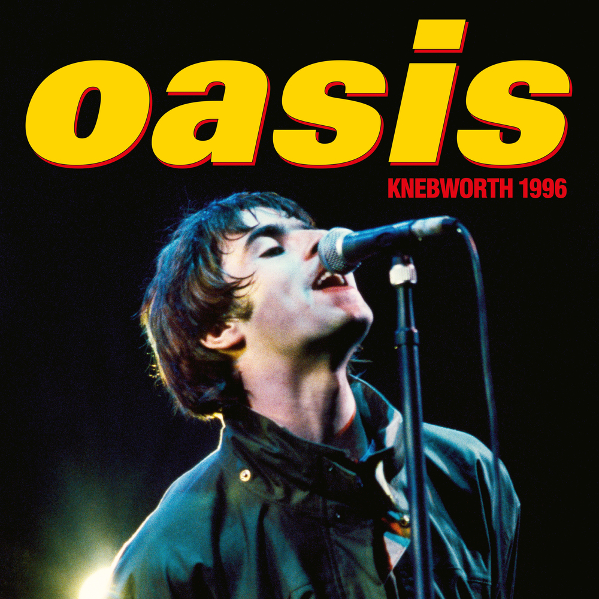
Knebworth 1996
- Rock 'n' Roll Star – Inicio en vivo de un espectáculo inolvidable.
- Live Forever – Performance que resalta la conexión con el público.
- Wonderwall – Momento épico y vibrante en cada acorde.
- Don't Look Back in Anger – La energía de la multitud convertida en himno.
- Champagne Supernova – Cierre en vivo que deja huella en la historia.
- Extra Track: Slide Away (Live) – Variación enérgica que revitaliza el clásico.
Contacto
Para más información o colaboraciones, escribe a: info@oasisrock.com